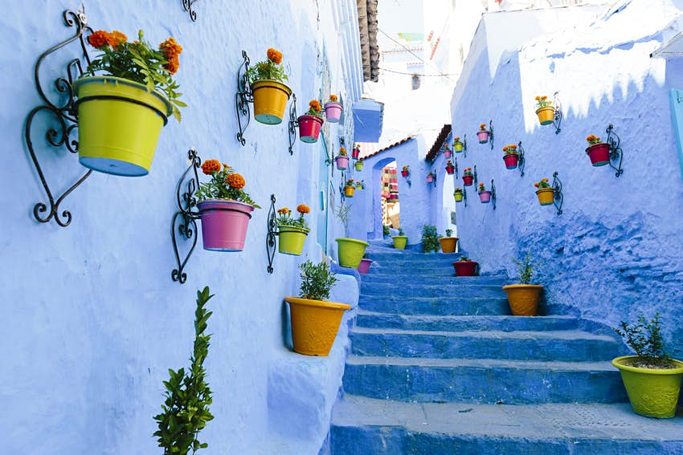
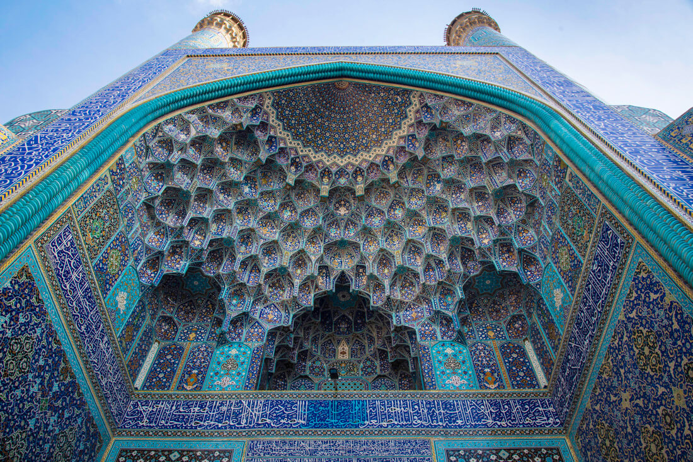
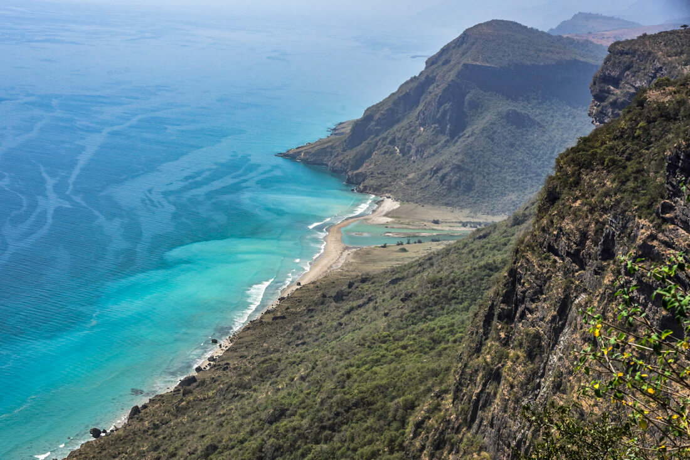
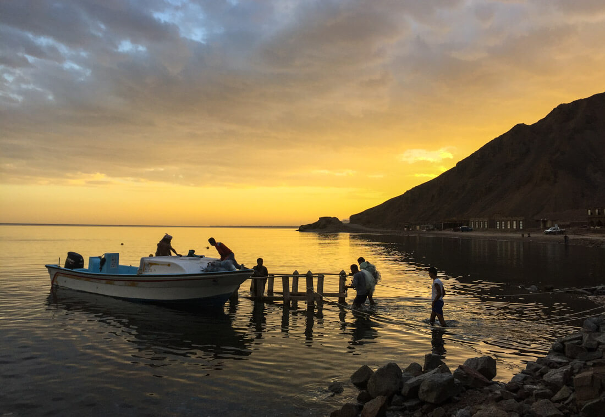
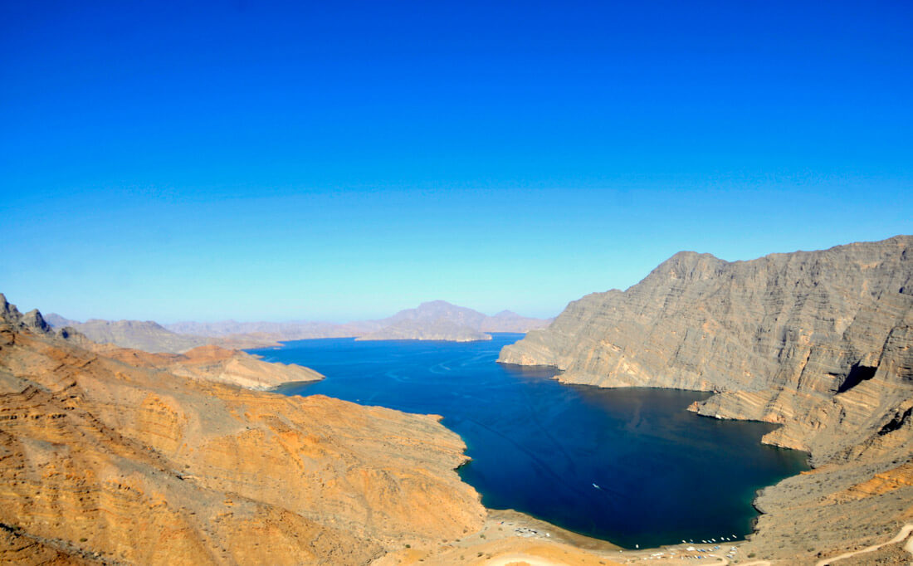
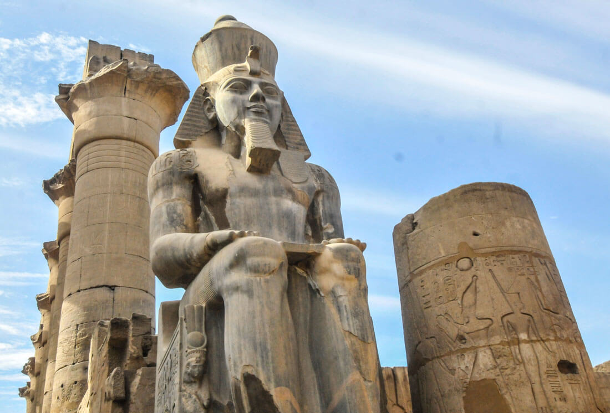
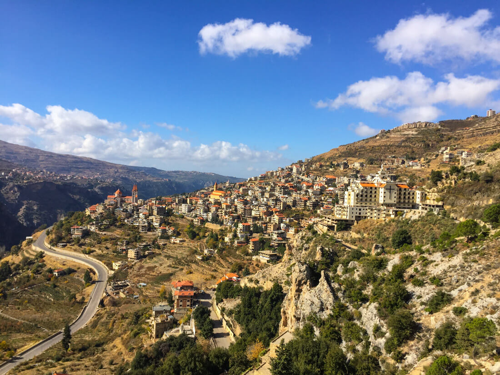
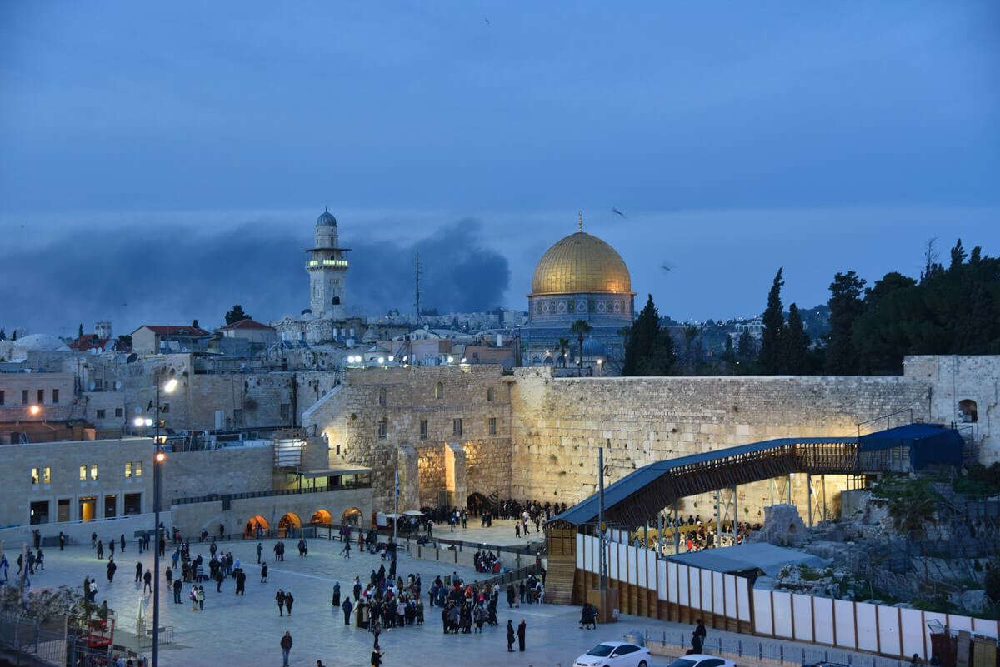
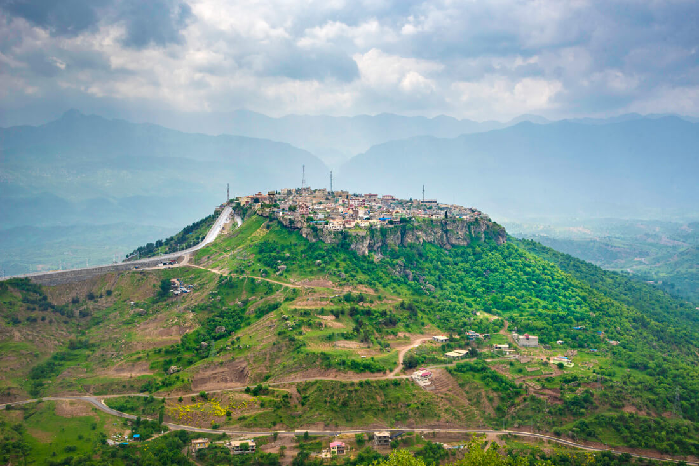
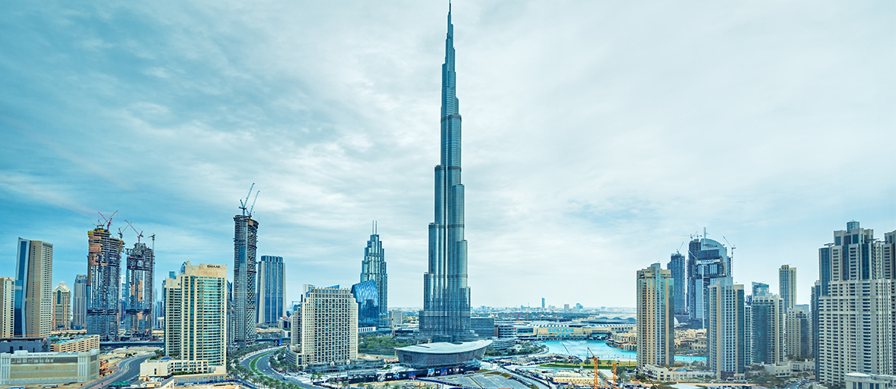

- About me
My name is Faten Samman I'm 27 years old I was born and raised in Jordan , I live with my parents in Amman,I have 2 sisters and 2 brothers,
- Education
- bachelor's degree in architecture engineering from University of Jordan
- General secondary education:Scientific stream(Average:92.6%).
- Experience
- Founder at New Generation Center for about one year
- Interior design instructor at pravo academy/ Hashimate University branch
- Jonior architect at semat consultant engineering company for 6 mounths
-
I use many softwares to show & apply my thoughts in real life like
- Autocad
- Revit Architecture
- 3dsmax with corona render engine
- Photoshop
- I like chess and Jwaker and I love hangin out with friends finally I like programming from the softwares which I use in my work field, so I wish learn more about it ❤️
Best places that I wish to visit in middle east ^__^
Chefchaouen- Morocco
Esfahan-dropping Islamic architecture-Iran
The coastline of Dhofar province- Oman
Dahab - egypt
Musandam – The Norway of the Middle East- Oman
Luxor – The greatest open-air museum- egypt
Qadisha Valley – Lovely Christian mountain villages-Lebanon
Jerusalem – The holiest place for the three main monotheist religions-Palastine
Amadiya – Home to the Three Wise Men- Iraq
Burj Khalifa- Dubai
